vm_name = "centos-base" # root password password = "password" user = "centos" user_password = password # Virtualbox workarounds #click("1396821812290.png") def go_faster(): # Go faster button (skip optional tests and timeouts) try: wait(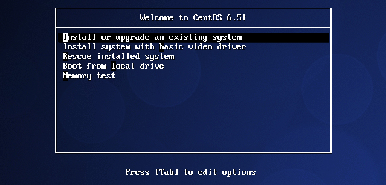, 30) App.focus(vm_name) type(Key.ENTER) except FindFailed: pass def skip_media_check(): wait(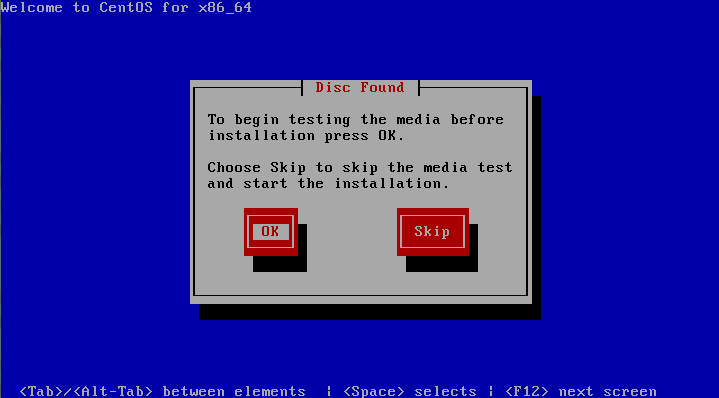, 120) App.focus(vm_name) type(Key.RIGHT) type(Key.ENTER) def skip_splash_screen(): wait(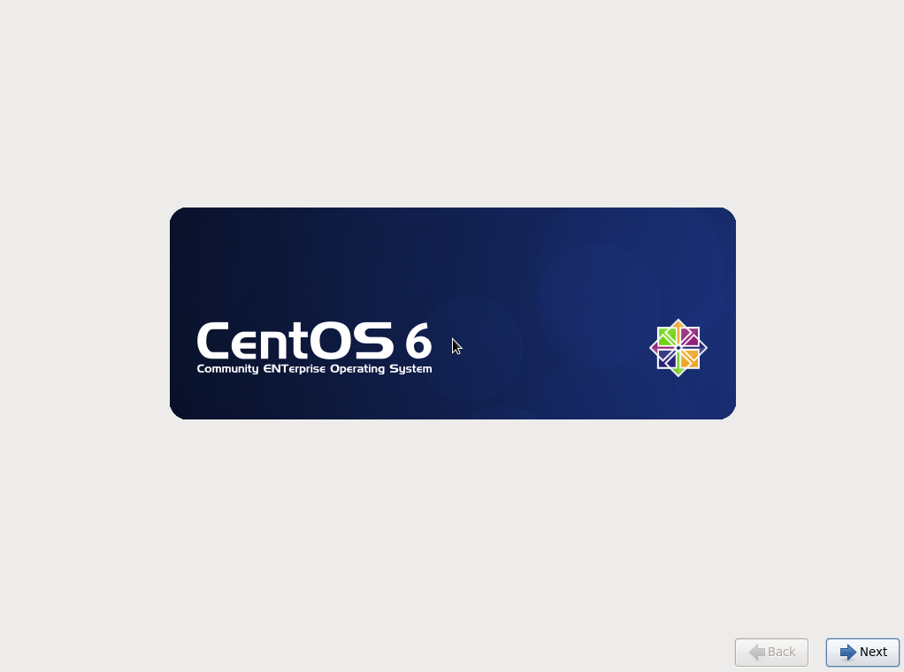, 60) App.focus(vm_name) type(Key.ENTER) def select_language(): wait(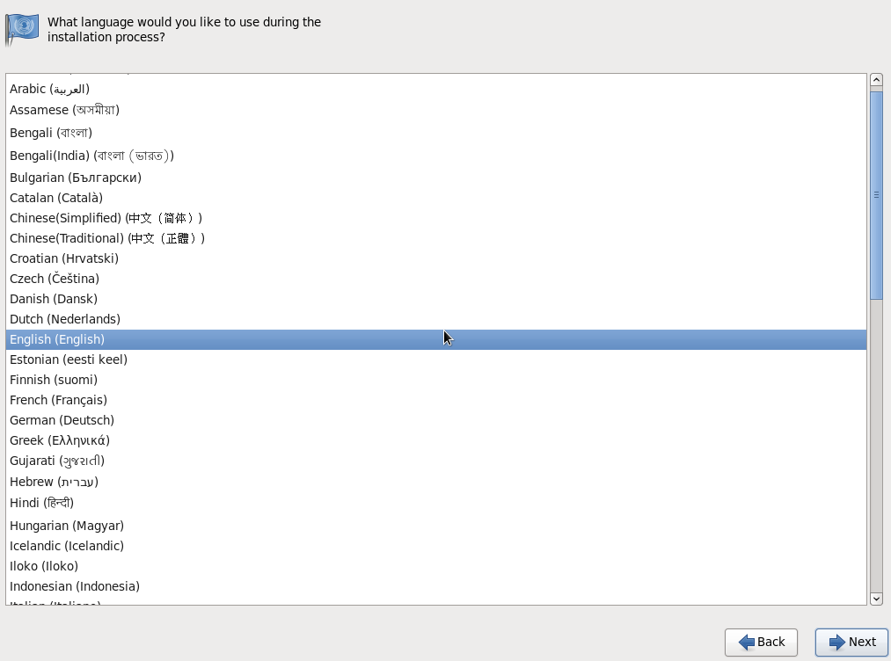, 10) App.focus(vm_name) type(Key.ENTER) wait(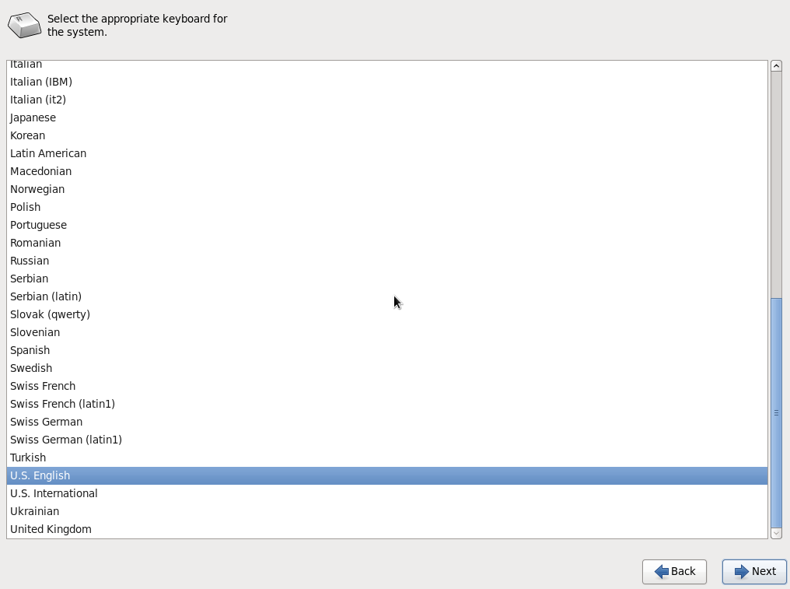, 10) type(Key.ENTER) def configure_partitioning(): wait(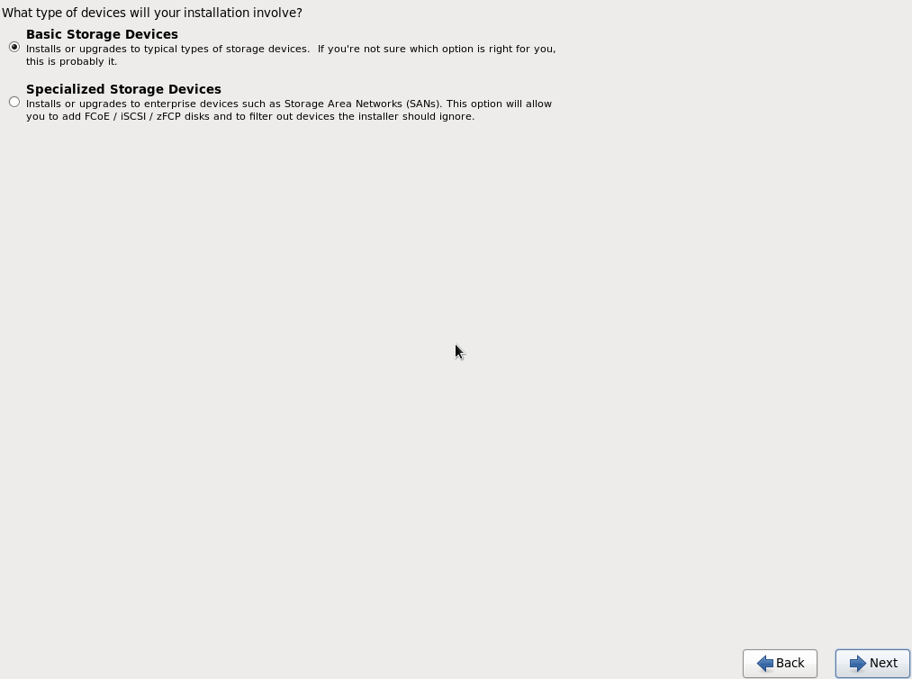, 10) App.focus(vm_name) type(Key.ENTER) sleep(5) if exists(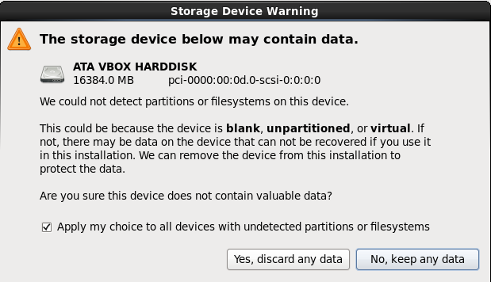): App.focus(vm_name) type(Key.TAB, KeyModifier.SHIFT) type(Key.ENTER) def configure_hostname(): wait(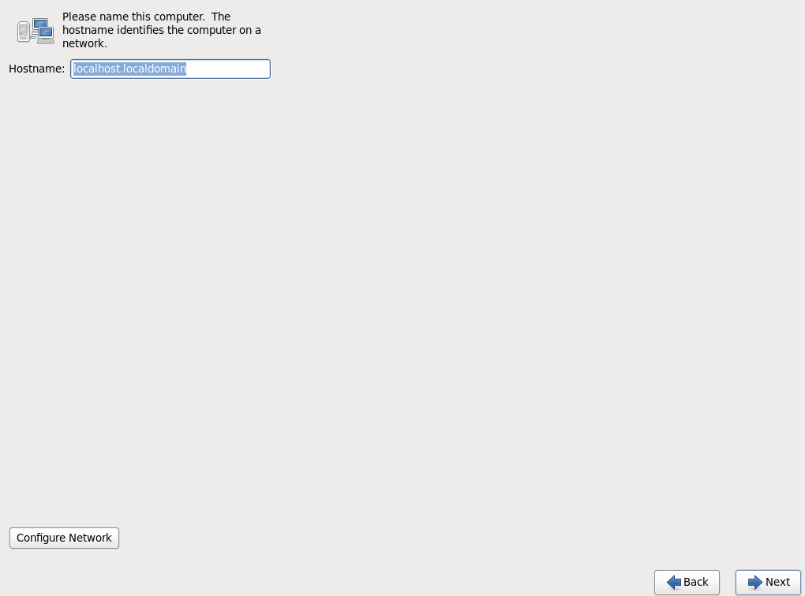, 10) App.focus(vm_name) type(vm_name) type(Key.ENTER) def skip_timezone(): # Timezone dropdown doesn't want to play ball, just skip it for now... wait(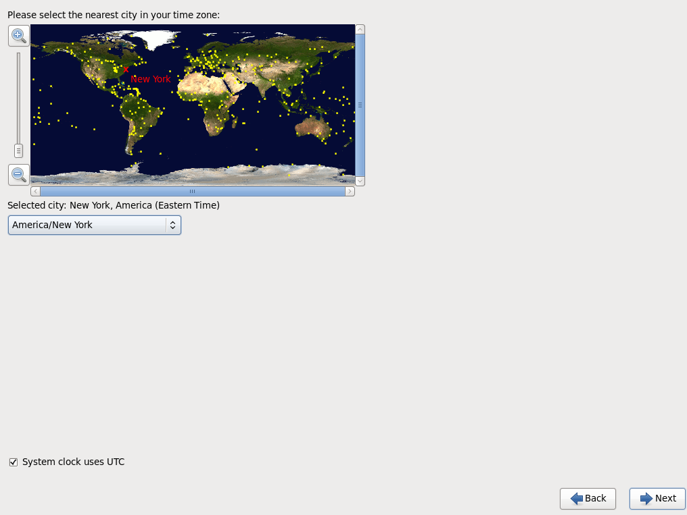, 10) type(Key.ENTER) def set_password(): wait(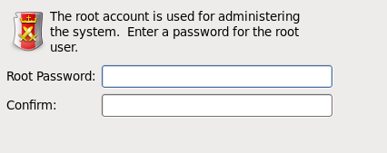, 10) App.focus(vm_name) type(password) type(Key.TAB) type(password) type(Key.ENTER) if exists(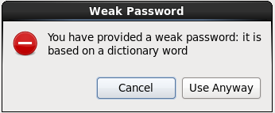): type(Key.TAB) type(Key.ENTER) def configure_partitioning_pt2(): wait(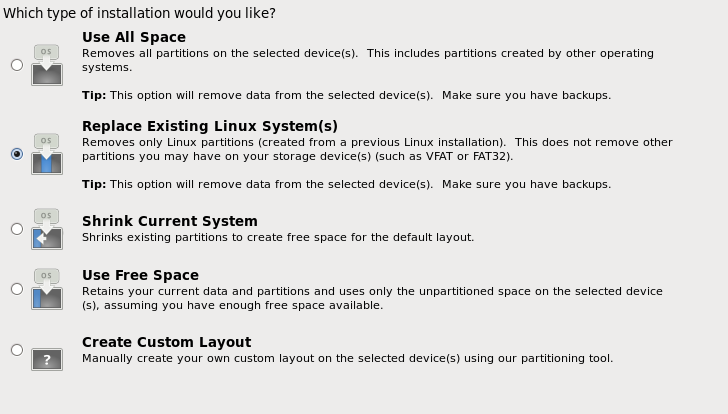, 10) App.focus(vm_name) type(Key.TAB) sleep(0.2) type(Key.UP) type(Key.TAB, KeyModifier.SHIFT) type(Key.ENTER) wait(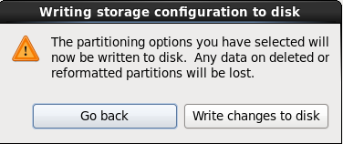, 10) type(Key.TAB) type(Key.ENTER) def configure_packages(): # Desktop setup is fine wait(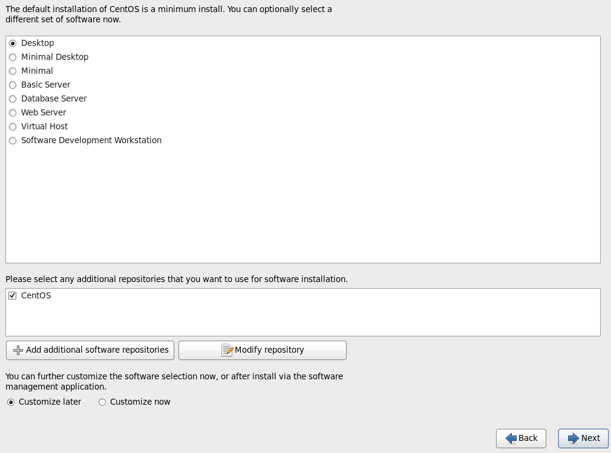, 10) App.focus(vm_name) type(Key.ENTER) def finish_and_reboot(): wait(None, 180) App.focus(vm_name) type(Key.ENTER) def first_boot(): wait(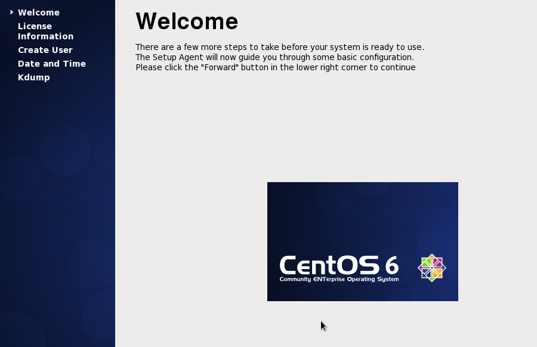, 300) App.focus(vm_name) type(Key.ENTER) sleep(0.5) type(Key.ENTER) sleep(0.5) # User setup screen type(user) type(Key.TAB) type(user) type(Key.TAB) type(user_password) type(Key.TAB) type(user_password) type(Key.TAB) type(Key.TAB) type(Key.TAB) type(Key.TAB) type(Key.ENTER) if exists(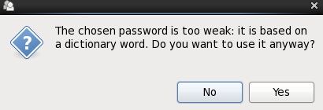): type(Key.TAB) type(Key.ENTER) if exists(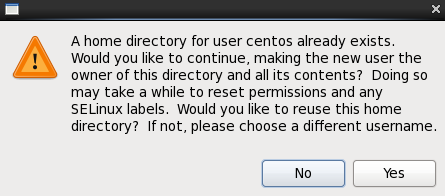): type(Key.TAB) type(Key.ENTER) # Time setup screen type(Key.TAB) type(Key.TAB) type(Key.ENTER) sleep(0.1) type(Key.TAB, KeyModifier.SHIFT) type(Key.TAB, KeyModifier.SHIFT) type(Key.ENTER) waitVanish(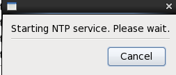, 30) sleep(2) # Kdump setup screen if exists(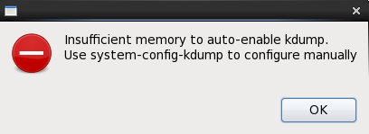): type(Key.ENTER) type(Key.ENTER) def login(): wait(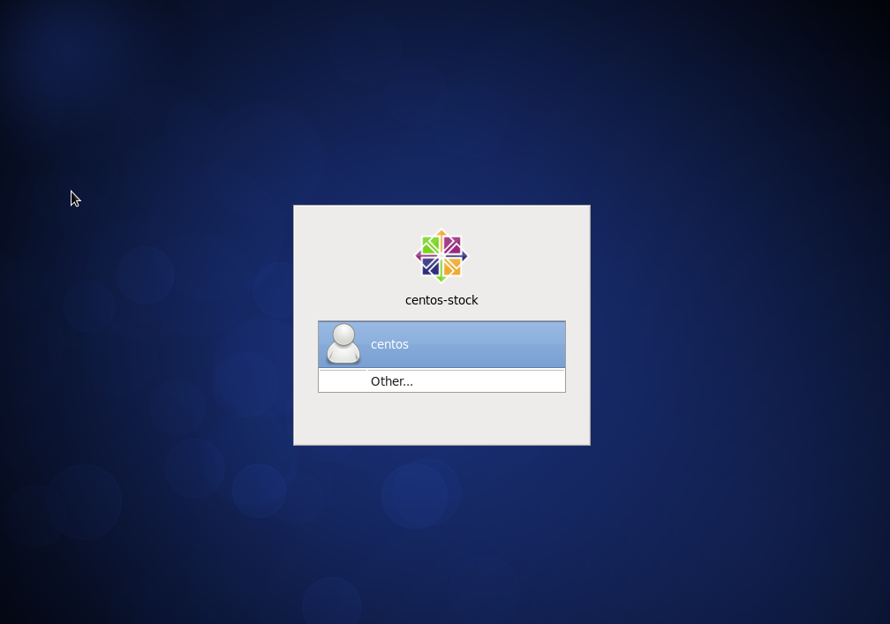, 30) App.focus(vm_name) type(Key.ENTER) sleep(2) type(user_password) type(Key.ENTER) go_faster() skip_media_check() skip_splash_screen() select_language() configure_partitioning() configure_hostname() skip_timezone() set_password() configure_partitioning_pt2() configure_packages() waitVanish(, 1800) finish_and_reboot() first_boot() login()